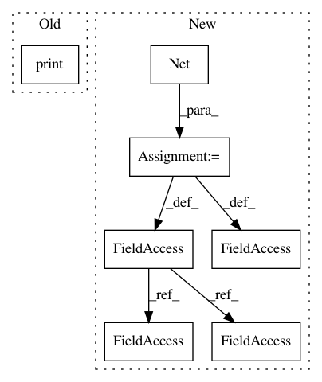

e2db3b3f1d3d23cd5bc1e295835e0f4b33e95447,examples/cora_gcn.py,,,#,57
Before Change
print("Run:", run, "Test Accuracy:", acc[-1])
acc = torch.FloatTensor(acc)
print("Mean:", acc.mean(), "Stddev:", acc.std())
After Change
return F.log_softmax(x, dim=1)
model = Net()
if torch.cuda.is_available():
train_mask, val_mask = train_mask.cuda(), val_mask.cuda()
test_mask, model = test_mask.cuda(), model.cuda()
optimizer = torch.optim.Adam(model.parameters(), lr=0.01, weight_decay=0.005)
def train():
In pattern: SUPERPATTERN
Frequency: 3
Non-data size: 7
Instances
Project Name: rusty1s/pytorch_geometric
Commit Name: e2db3b3f1d3d23cd5bc1e295835e0f4b33e95447
Time: 2018-03-07
Author: matthias.fey@tu-dortmund.de
File Name: examples/cora_gcn.py
Class Name:
Method Name:
Project Name: dmlc/dgl
Commit Name: 7156c7163b046686064d7c9de445041870e672bc
Time: 2018-12-01
Author: minjie.wang@nyu.edu
File Name: tutorials/1_first.py
Class Name:
Method Name:
Project Name: rusty1s/pytorch_geometric
Commit Name: 04ad358395c7bd074ffb9af235ccb76d2c0dc4cc
Time: 2020-07-01
Author: matthias.fey@tu-dortmund.de
File Name: examples/pna.py
Class Name:
Method Name: